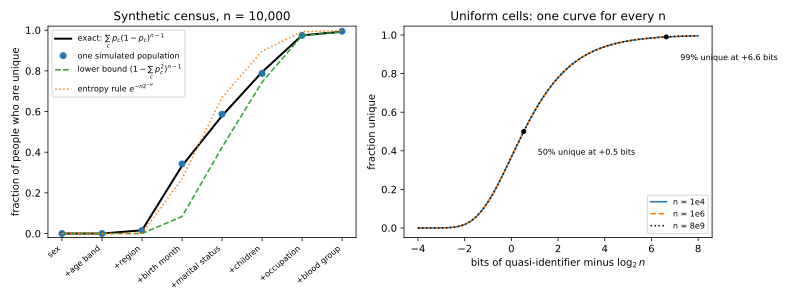
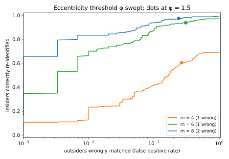

15 Linkage and re-identification
15.1 Why this matters
A hospital shares its discharge records with researchers after deleting names and addresses, keeping postcode, date of birth, sex and diagnosis. But most people are the only person with their postcode, birth date and sex, so anyone holding a table with names and those three columns, such as a voter roll, can join the two and put a name back on most rows. This is a linkage attack, and naming a “de-identified” record is re-identification. It needs only the release and some auxiliary data, so run it before you sign off on sharing a dataset.
What makes it work is that identifying information is measured in bits, and bits add up. Picking one person out of \(n\) takes \(\log_2 n\) bits, because each bit halves the candidates: 27.9 bits for the 248.7 million people in the United States in 1990, 32.9 for 8 billion. An attribute with \(v\) equally likely values carries at most \(\log_2 v\) bits, and for independent attributes the bits add, because probabilities multiply and the logarithm turns the product into a sum. Once the bits an adversary knows exceed \(\log_2 n\) by a few, almost everyone is unique.
15.2 Quasi-identifiers and the linkage attack
Direct identifiers, such as a name, name a person on their own. Sensitive attributes, such as a diagnosis, are what the release is about. Quasi-identifiers sit in between: they name nobody alone, but in combination they single people out, and they also appear in other datasets next to names. ZIP code, birth date and sex are the classic example. Deleting the first kind and keeping the third is the most common form of “de-identification”, and linkage is aimed at exactly that gap.
Group the records of a release into equivalence classes, sets of records with identical quasi-identifiers. An adversary who knows the target is in the release, and knows the target’s quasi-identifiers, finds the target’s class and picks a record from it: right for sure if the class has one record, one time in \(k\) if it has \(k\). Each class therefore contributes exactly one record’s worth of wins however large it is, and the best possible success is \[\Pr[\text{win}] = \frac{J}{n}, \tag{15.1}\] the number \(J\) of distinct quasi-identifier combinations divided by the number \(n\) of records.
| ZIP code | Birth date | Sex | Diagnosis |
|---|---|---|---|
| 02138 | 1961-03-14 | F | asthma |
| 02138 | 1972-11-02 | M | diabetes |
| 02138 | 1972-11-02 | M | hypertension |
| 02139 | 1958-06-21 | F | depression |
| 02139 | 1990-01-01 | F | migraine |
| 02139 | 1990-01-01 | F | asthma |
| 02139 | 1990-01-01 | F | fracture |
| 02141 | 1983-09-30 | M | pneumonia |
| Name | ZIP code | Birth date | Sex |
|---|---|---|---|
| Ana Silva | 02138 | 1961-03-14 | F |
| Ben Cole | 02138 | 1972-11-02 | M |
| Carla Diaz | 02139 | 1958-06-21 | F |
| Dan Eto | 02141 | 1983-09-30 | M |
Join Table 15.1 with Table 15.2. Ana, Carla and Dan are each alone in their class, so their diagnoses come out with certainty; Ben shares his class with one other record, so the adversary is right about him half the time. The classes have sizes 1, 1, 1, 2 and 3, so \(J = 5\) for \(n = 8\) and the success is \(5/8 = 0.625\). Sweeney re-identified the governor of Massachusetts this way in the late 1990s: on the Cambridge voter roll, six people shared his birth date, three were men, and one lived in his ZIP code.
Every unique record is a certain win, so the fraction of unique records is a floor on the success, and predicting uniqueness is the core of a risk assessment. Conversely, if every class has at least \(k\) records then \(J \le n/k\) and the success is at most \(1/k\). That is the promise of k-anonymity, and it holds against this adversary only: had all three women born on 1990-01-01 had asthma, the adversary would learn it without picking a record, the gap studied in Syntactic anonymity and how it breaks. And which columns are quasi-identifiers is not a property of the table but a guess about what auxiliary data exist; in sparse data, every column is one (Section 15.4).
15.3 How many people are unique?
To predict uniqueness for a release not yet made, use a model of the population. Call a person’s combination of attribute values their cell, and suppose each person falls in cell \(c\) with probability \(p_c\), independently. A person in cell \(c\) is unique when all \(n - 1\) others land elsewhere, which happens with probability \((1 - p_c)^{n-1}\); averaging over the person’s own cell gives the expected fraction unique, \[\frac{\mathbb E U}{n} = \sum_c p_c(1 - p_c)^{n-1}. \tag{15.2}\]
With \(M\) equally likely cells this becomes the bits picture. Each person stays alone with probability about \(e^{-n/M}\), where \(n/M\) is the average occupancy of a cell. With \(b = \log_2 M\) bits the occupancy is \(2^{\log_2 n - b}\), so the fraction unique is about \(\exp(-2^{\log_2 n - b})\): it depends only on the bits beyond the \(\log_2 n\) needed to name one person, the same curve for a town and for the planet (Figure 15.1, right). Every extra bit halves the occupancy, so the curve is steep: half the people are unique at 0.53 bits beyond \(\log_2 n\), 99% at 6.64 bits beyond.
So “33 bits identify anyone” is misleading: 33 bits for 8 billion people put about one person in the average cell, where only a fraction 0.394 is unique, because random labels collide often. 99% uniqueness takes 39.5 bits.
Sweeney’s attributes show the accounting. About 40,000 ZIP codes are worth 15.3 bits, a birth date over 80 years 14.8, and sex 1.0: at most 31.1 bits against the 27.9 that single out one American, so about 0.106 people per cell and a uniqueness of \(e^{-0.106} = 0.899\) if cells were equally likely. From 1990 census tables she estimated 87%. The gap is skew: people crowd into popular cells, which hold nobody unique, while rare cells stay empty. Correlation pulls the same way, because correlated attributes (ZIP code and income) say partly the same thing, so their joint bits are less than the sum. A bits sum is a quick screen, not an estimate. Table 15.3 reveals the attributes of a synthetic census of 10,000 people one at a time (\(\log_2 n = 13.29\) bits).
| Attributes known | Bits \(H\) | Exact | Collision bound | Uniform cells |
|---|---|---|---|---|
| sex, age band, region | 9.31 | 0.0158 | 0.0000 | 0.0004 |
| + birth month | 12.90 | 0.3328 | 0.0834 | 0.5215 |
| + marital status | 14.60 | 0.5789 | 0.4237 | 0.8498 |
| + children | 16.48 | 0.7939 | 0.7443 | 0.9732 |
| + occupation | 20.39 | 0.9747 | 0.9736 | 0.9986 |
| + blood group | 22.57 | 0.9925 | 0.9924 | 0.9998 |
With 12.90 bits, just under \(\log_2 n\), a third of people are unique; about 7 bits beyond it, 97.5% are. The uniform model overstates uniqueness, by up to 0.27, because the attributes are skewed: a few large regions hold many people, who are not unique. A floor that never overstates comes from the collision probability \(\sum_c p_c^2\), the chance that two random people share a cell: \(\mathbb E U/n \ge (1 - \sum_c p_c^2)^{n-1}\). For independent attributes it is a product over columns, since two people share a cell exactly when they agree on every attribute, so the floor needs only each column’s frequencies. It is loose when a few crowded cells hold most people and tight once most cells are nearly empty. For a real audit, compute Equation 15.2 from a model of the joint distribution, such as the Gaussian copula of Rocher, Hendrickx and de Montjoye (2019).

15.4 Sparse, high-dimensional data: the Netflix attack
In 2006 Netflix released about 100 million ratings by 480,189 subscribers, names replaced by random numbers. There are no columns to join on, and what an adversary knows (“she watched these films around these dates”) is partial and noisy, so the release looks safe. Narayanan and Shmatikov (2008) showed that it is not, by the same accounting. Most films are rated by few people, so each film in a record carries many bits: one rated by 1% of subscribers is worth \(\log_2 100 = 6.64\) bits, and three such films carry 19.9 bits, more than the 18.9 that single out a subscriber.
Since no record matches exactly, the attack scores every record by how well it agrees with the auxiliary information \(\mathrm{aux}\), item by item: \[\mathrm{Score}(\mathrm{aux}, r) = \sum_{i \in \mathrm{aux}} w_i\,\mathrm{Sim}(\mathrm{aux}_i, r_i), \tag{15.3}\] where \(\mathrm{Sim}\) is 1 if record \(r\) agrees on item \(i\) (say, within one star) and 0 otherwise. Rarer items get larger weights, because agreeing on a film half the subscribers rated says little and agreeing on an obscure one says a lot; Narayanan and Shmatikov used \(w_i = 1/\ln\lvert\mathrm{supp}(i)\rvert\), with \(\lvert\mathrm{supp}(i)\rvert\) the number of records that rated item \(i\). The likelihood ratio of “target” against “unrelated” gives the principled version, \(w_i \approx \ln(1/s_i) + \ln\frac{1 - \varepsilon}{\varepsilon}\), with \(s_i\) the chance an unrelated record agrees on item \(i\) and \(\varepsilon\) the chance the adversary is wrong about it. Because the score adds up evidence, noise costs little: a wrong item costs the target one term, and unrelated records rarely gain one. On Netflix, 8 ratings of which 2 may be wrong, with dates known within 14 days, identify 99% of records.
| Auxiliary information | Equal weights | \(1/\ln\lvert\mathrm{supp}(i)\rvert\) | \(\ln(n/\lvert\mathrm{supp}(i)\rvert)\) |
|---|---|---|---|
| 2 items | 0.428 | 0.440 | 0.402 |
| 4 items | 0.936 | 0.941 | 0.924 |
| 8 items | 1.000 | 1.000 | 1.000 |
| 8 items, 2 of them wrong | 0.943 | 0.989 | 0.978 |
A synthetic matrix of 5,000 users with Netflix-like density shows the bits deciding (Table 15.4). An item carries a median of 5.83 bits against \(\log_2 5000 = 12.29\) needed, so two items fall a little short and re-identify about 43% of targets, while four clear the bar and re-identify 93%. The weighting barely matters except when some items are wrong: then equal weights drop to 94%, because a wrong popular item lets many unrelated records score. For a defender, perturbing a few values does not protect sparse data; the score needs a margin, not a perfect match.
If the target might not be in the release, the adversary must also decide when to trust the top score. The eccentricity test declares a match only when the best score \(s_1\) stands out from the second best \(s_2\), in standard deviations \(\sigma\) of all scores: \((s_1 - s_2)/\sigma \ge \varphi\). How often an outsider’s top score stands out by chance depends on the score distribution, so no threshold is safe in the abstract. With 8 items of which 2 are wrong, the popular \(\varphi = 1.5\) matches 94.8% of insiders but also “matches” 26.3% of outsiders. Holding false matches to 1% of outsiders takes \(\varphi = 4.83\), which still re-identifies 73.0% of insiders. So calibrate the threshold on records known not to be the target, and read the attack at a small false positive rate (Figure 15.2).

15.5 Does releasing a sample protect?
Agencies often release a 1% sample, arguing plausible deniability: a record unique in the sample need not be unique in the population. Let each person be in the release with probability \(\pi\), the sampling fraction, and let \(\lambda\) be the expected number of other people in the target’s cell.
Suppose the adversary knows a person’s cell and finds exactly one record there. Either the target was sampled and nobody else in the cell was, or the target was left out and one other person was. Each other person in the cell supplies a wrong story as likely as the right one, and since the release shows no second record, those others are all unsampled, about \(\lambda(1 - \pi)\) of them. The match is right with probability right over right plus wrong: \[\kappa \approx \frac{1}{1 + \lambda(1 - \pi)}. \tag{15.4}\] Going the other way, a record alone in the sample is named by a population register, such as a voter roll, when nobody unsampled shares its cell, which has probability \[\xi \approx e^{-\lambda(1 - \pi)}. \tag{15.5}\]
Sampling enters both only through \(1 - \pi\), which is already close to 1 for any small sample. So what protects a person is a crowded cell, not the sampling: shrinking the sample can never push \(\kappa\) below \(1/(1 + \lambda)\) or \(\xi\) below \(e^{-\lambda}\), and for a rare cell both stay near 1 (Table 15.5). Going from a 50% to a 1% sample lowers \(\kappa\) by only 0.04 for a rare cell, and by 0.16 for a crowded one.
| \(\lambda\) (expected others in the cell) | \(\kappa\), \(\pi = 0.01\) | \(\kappa\), \(\pi = 0.5\) | \(\xi\), \(\pi = 0.01\) | \(\xi\), \(\pi = 0.5\) |
|---|---|---|---|---|
| 0.1 | 0.910 | 0.952 | 0.906 | 0.951 |
| 0.5 | 0.669 | 0.800 | 0.610 | 0.779 |
| 2 | 0.336 | 0.500 | 0.138 | 0.368 |
Over a whole release, a small sample grants deniability only to people who were not unique in the population anyway. In a synthetic population of 100,000 with seven attributes, 82.8% of people are unique, and in a 1% sample 0.8301 of the sample-unique records are population-unique. Nor does “any match might be wrong” help, because a sample is a fair picture of the population: the adversary can estimate each cell’s \(\lambda\) from the sample itself and compute \(\xi\) record by record. Doing that from one 1% sample predicts 0.817 on average against an actual 0.824, and the records it rates above 0.95 are population-unique 99.3% of the time.
Removing names, perturbing values and sampling all failed the same way: they left enough bits in each record and bet on what the adversary didn’t know. A defence has to hold whatever auxiliary data exist. The classic attempts, k-anonymity and its successors, are tested against that requirement in Syntactic anonymity and how it breaks, and The definition of differential privacy gives the guarantee that meets it.
15.6 Code
Three numbers summarise the linkage risk of a release you hold: \(J/n\), the fraction of unique records and the smallest class size. For a planned release, the uniform-cells formula and Equation 15.4 give quick estimates.
from collections import Counter
from math import exp, log2
def linkage_report(rows: list[tuple[str, ...]]) -> tuple[float, float, int]:
"""Linkage success J/n, fraction of unique records, and smallest class size of a release."""
sizes = Counter(rows).values() # one count per distinct quasi-identifier combination
n = len(rows)
return len(sizes) / n, sum(1 for k in sizes if k == 1) / n, min(sizes)
def uniform_unique(n: float, cells: float) -> float:
"""Expected fraction of n people who are unique when they fall in `cells` equally likely cells."""
return exp(-n / cells)
def match_correct(lam: float, pi: float) -> tuple[float, float]:
"""In a sample of fraction pi, with lam expected others in the cell: (kappa, xi)."""
return 1 / (1 + lam * (1 - pi)), exp(-lam * (1 - pi))
release = [
("02138", "1961-03-14", "F"), ("02138", "1972-11-02", "M"), ("02138", "1972-11-02", "M"),
("02139", "1958-06-21", "F"), ("02139", "1990-01-01", "F"), ("02139", "1990-01-01", "F"),
("02139", "1990-01-01", "F"), ("02141", "1983-09-30", "M"),
]
success, unique, k = linkage_report(release)
print(f"{success:.3f} {unique:.3f} {k}") # 0.625 0.375 1
cells = 40_000 * 365 * 80 * 2 # ZIP code x birth date over 80 years x sex
print(f"{log2(cells):.1f} {uniform_unique(248.7e6, cells):.3f}") # 31.1 0.899
kappa, xi = match_correct(0.1, 0.01)
print(f"{kappa:.3f} {xi:.3f}") # 0.910 0.906The full edition’s script, linkage.py, computes every number in this chapter, including the synthetic Netflix experiment and the sampling simulations:
uv run python code/part02-attacks/linkage.py15.7 Cheat sheet
| Result | Formula | Notes |
|---|---|---|
| Bits to name one person | \(\log_2 n\) | 33 for the world, 28 for the US, 13 for 10,000 people |
| Linkage success | \(J/n\) | Target known to be in the release; at most \(1/k\) if every class has \(\ge k\) records |
| Expected fraction unique | \(\sum_c p_c(1 - p_c)^{n-1}\) | Needs a model of the joint distribution |
| Uniform cells, \(b\) bits | \(\exp(-2^{\log_2 n - b})\) | 50% unique at \(\log_2 n + 0.53\) bits, 99% at \(\log_2 n + 6.64\) |
| Collision floor | \((1 - \sum_c p_c^2)^{n-1}\) | Needs only the marginals for independent attributes |
| Sparse-data score | \(\sum_i w_i\,\mathrm{Sim}(\mathrm{aux}_i, r_i)\), \(w_i \approx \ln(1/s_i) + \ln\frac{1-\varepsilon}{\varepsilon}\) | Each agreeing item is worth \(\log_2(1/s_i)\) bits |
| Eccentricity | \((s_1 - s_2)/\sigma \ge \varphi\) | Calibrate \(\varphi\) on outsiders at a small false positive rate |
| Match in a sample | \(\kappa \approx 1/(1 + \lambda(1 - \pi))\), \(\xi \approx e^{-\lambda(1 - \pi)}\) | At least \(1/(1 + \lambda)\) and \(e^{-\lambda}\) for every \(\pi\) |
Rules of thumb
- Add up the bits of every attribute an adversary might know; above \(\log_2 n\), assume most people are unique.
- Score a release you hold by \(J/n\) and its unique records, not by whether names were removed.
- Removing names, releasing a sample or perturbing a few values does not anonymize a dataset.
15.8 Further reading
- Sweeney, “Simple Demographics Often Identify People Uniquely” (2000): the 87% estimate and its variants with coarser geography.
- Narayanan & Shmatikov, “Robust De-anonymization of Large Sparse Datasets” (IEEE Symposium on Security and Privacy, 2008): the scoring algorithm, the eccentricity test and the Netflix experiments.
- Rocher, Hendrickx & de Montjoye, “Estimating the success of re-identifications in incomplete datasets using generative models” (Nature Communications, 2019): per-record re-identification risk from a copula model, and why sampling does not protect.
- Ohm, “Broken Promises of Privacy: Responding to the Surprising Failure of Anonymization” (UCLA Law Review, 2010): the legal side, with the Massachusetts, search-log and Netflix cases.
Derivations. Every result in this chapter is derived step by step in the full edition’s chapter.